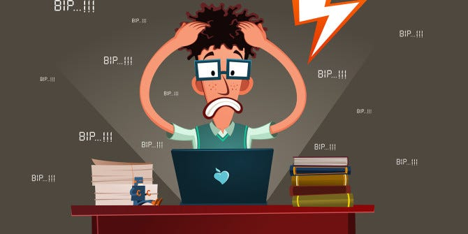

my blog
როგორ გავაკეთე ჩემი პირველი ვებსაიტი
july 29, 2025

ჩემი პირველი ვებსაიტის შექმნა იყო ერთდროულად საინტერესო, სასიამოვნო და ცოტა შეამაშფოთებელიც. ეს იყო ყველაზე განსხვავებული, ახალი და სრულიად უცხო ჩემთვის, მაგრამ ამავდროულად მომწონდა, რომ რაღაც რეალურს ვქმნიდი კოდით.
თავდაპირველად როცა დავრეგისტრირდი კურსზე და HTML-ის სწავლდა დავიწყე, ძალაინ ავღელდი - ბევრი უცნაური ტეგი, ელემენტი, სტრუქტურა... თავიდან ძალიან გამიჭირდა, მაგრამ შემდეგ შევეჩიე და ყველაფერი თავის ადგილზე დადგა. ვისწავლე როგორ უნდა ამეწყო საიტის ჩონჩხი header, section, div, footer-ის დახმარებით, როგორ დამემატებინა სურათები, ტექსტი და ა.შ.
იყო თუ არა რთული პროცესი?
შემდეგ დავიწყე CSS-ის შესწავლაც. მარტივი რა თქმა უნდა არც ეს ყოფილა. ერთი კოდის შეცდომით ჩაწერა და ყველაფერი შეიძლება თავდაყირა დამდგარიყო. ჩემთვის განსაკუთრებულად სასიამოვნო იყო ელემენტების განლაგება, სტილიზაცია, ფორმების მიცემა, რადგან ძალიან მიყვარს დეტალებზე ყურადღების გამახვილება.
საინტერესო იყო ჩემი შეცდომებიდან სწავლაც. სწავლის დაწყებიდან რამდენიმე დღე-ღამე დამჭირდა იმის გარკვევად, რატომ არ ჩანდა სწორად სურათი, რატომ ირეოდა განლაგებები, რატომ არ მუშაობდა ლინკები.. თავიდან ვბრაზდებოდი, ვიღლებოდი, მაგრამ როდესაც ჩემს სასურველ შედეგს ვაღწევდი, უდიდესი კმაყოფილება მეუფლებოდა - დაღლილობა და სიბრაზე იმ დროს უკვე აღარ არსებობდა.
შედეგი
საბოლოოდ, როდესაც საიტი ავაწყვე უდიდეს სიამაყეს და კმაყოფილებას ვგრძნობდი, მიუხედავად იმისა რომ ჩემს შექმნილ "საიტს" არაფერი განსაკუთრებული არ ჰქონდა ერთი ფოტოსა და მარტივი ტექსტის გარდა.
ამ გამოცდილებამ დამარწმუნა, რომ ეს სფერო ნამდვილად მაინტერესებს, თუმცა ამავდროულად საკმაოდ შრომატევადია და მოითხოვს თითოეულ დეტალზე ყურადღების გამახვილებას.
ჩემი მიღწევები
ცეკვა
ცეკვა ჩემთვის არა მხოლოდ ჰობია, არამედ გზაა საკუთარი თავის გამოხატვისა. ამ წლების განმავლობაში მონაწილეობა მივიღე არაერთ ღონისძიებაში და ფესტივალში, სადაც არა მხოლოდ ვცეკვავდი, არამედ ბევრ ახალ მეგობარიც შევიძინე( ქვემოთ წარმოდგენილია მხოლოდ მცირე რაოდენობის ჯილდოები).
ფორტეპიანო
მუსიკა ბავშვობიდან მიყვარს და პიანინოს სწავლა ერთ-ერთი საუკეთესო გადაწყვეტილება იყო. ვსწავლობდი 8 წელი. მაქვს 1 პირველი ადგილი, 2 მეორე ადგილი, 3 მესამე ადგილი და ლაურეატის ჯილდოები. აქ მხოლოდ წარმოდგენილია მცირე რაოდენობა. დამთავრების შემდეგ პიანინოზე დაკვრა ჩემი ერთ-ერთი ჰობი გახდა.